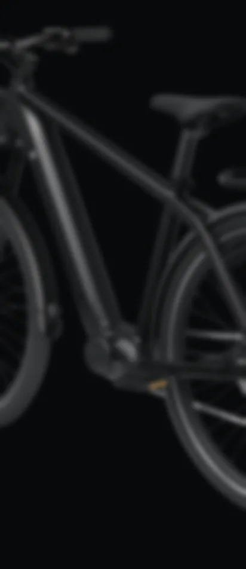
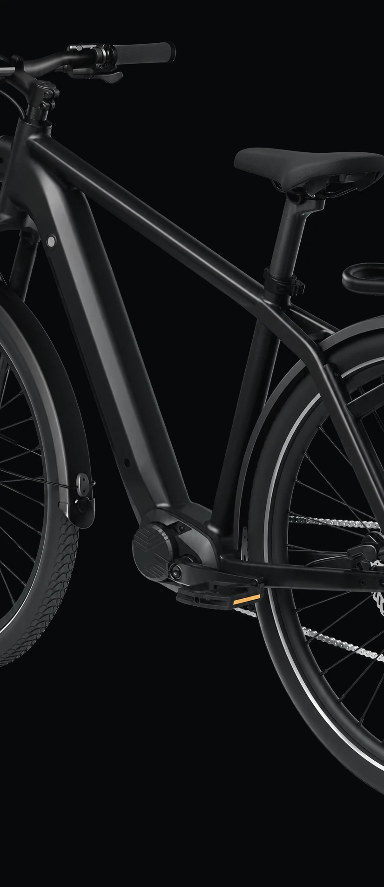

Ember bewaakt je accu.
Zet je op de wachtlijstEmber meet de temperatuur van je e-bike-accu, leert wat normaal is en laat je samen met de app weten wanneer je accu aandacht nodig heeft.


21°
Alles normaal
1 dag
zonder incident · vandaag
20°
15°
−24 u
−18 u
−12 u
−6 u
Nu
Embernu
Warmer dan normaal
Je accu wordt sneller warm dan normaal. Laadt hij? Haal de lader eruit.
Op het frame, naast de accu.
Je plaatst Ember op het frame, vlak bij de accu. Zonder kabels en zonder aansluiting op de accu.
Magnetische bevestiging.
Je plakt eenmalig een dunne magnetische sticker bij de accu. Later haal je hem zonder resten weg.
Elke keer dezelfde stand.
De magneet zet Ember steeds in dezelfde positie. Losnemen om op te laden gaat met de hand, zonder gereedschap.
Eén overzicht in de app.
Ember meet elke paar minuten, van buitenaf. De app toont de actuele temperatuur, de status en het verloop per dag, week en maand.
Een melding bij afwijking.
Warmt de accu sneller op dan het voorspellingsmodel verwacht? Dan krijg je één stille melding met advies.
Een alarm bij oververhitting.
Raakt de accu oververhit, dan gaan je telefoon en Ember zelf af, ook door je stiltestand heen. Reageer je niet binnen drie minuten, dan krijgen je contacten bericht.

USB-C-kabel
Ember
Magnetische sticker


In cijfers
Accubranden nemen toe.
Bij steeds meer woningbranden is de accu van een elektrische fiets, scooter of bromfiets de vermoedelijke oorzaak.
- In 20232%van de woningbranden.
- In 20242,2%van de woningbranden begon vermoedelijk bij zo’n accu.
- Alle accu’s en batterijenbijna 5%van de woningbranden in 2024.
Ontwikkeld met partners

- Start- en OntwikkelbijdrageNoord-Holland Noord
Veelgestelde vragen
Nee. Ember voorkomt of blust geen branden en maakt een accu niet veiliger. Hij laat zien hoe de temperatuur zich ontwikkelt en waarschuwt als dat afwijkt. Gebruik hem naast de beveiliging van je accu, een rookmelder en het laadadvies van de brandweer.
Ember leert hoe jouw accu zich normaal gedraagt. Een voorspellingsmodel vergelijkt elke meting met dat patroon, en de app laat het je weten zodra je accu afwijkt. Het model wordt nog ontwikkeld en getest.
De buitenkant van de accu, met twee infraroodsensoren die hem niet raken, en de lucht eromheen met een derde sensor. Niet de cellen binnenin.
De eerste versie is gemaakt voor e-bikes, met Ember op het frame bij de accu. Welke fietsen en accuvormen hij ondersteunt, testen we nu.
Uit een eigen oplaadbare batterij. Ongeveer eens per kwartaal laad je hem op met de USB-C-kabel uit de doos. Er komt niets aan de accu van je e-bike.
Dat hangt af van de verbinding, wifi of mobiel, en die keuze maken we nog. Komt er een abonnement, dan weet je precies waarvoor je betaalt voordat je koopt.
Er is nog geen prijs of datum. We overwegen een lancering via Kickstarter, te beginnen in Nederland. Wie op de wachtlijst staat, hoort het als eerste.
We antwoorden per e-mail.